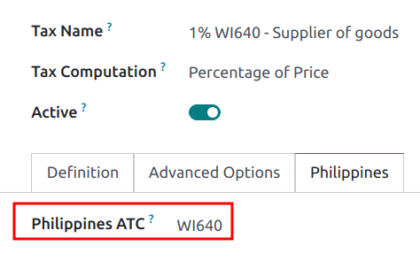

Filipinas¶
Configuración¶
Instale el paquete de localización fiscal para 🇵🇭 Filipinas para obtener todas las funciones de contabilidad de manera predeterminada de esta localización; como los planes de cuentas, impuestos y el reporte BIR 2307. Esto le proporcionará una plantilla base para empezar a utilizar la contabilidad filipina.
Nota
Al crear una nueva base de datos y seleccionar
Filipinascomo país se instala de manera automática el módulo de localización fiscal Filipinas - Contabilidad.Si el módulo ya está instalado en una empresa existente, entonces el plan de cuentas y los impuestos no se reemplazarán si ya hay asientos contables registrados.
Se instalará el reporte BIR 2307, pero las retenciones de impuestos deberán crearse manualmente.
Plan de cuentas e impuestos¶
Se instala una configuración mínima predeterminada para los planes de cuentas así como los siguientes tipos de impuestos con un enlace a su respectiva cuenta:
IVA 12%
Exento de IVA
Retención fiscal
Para las retenciones de impuestos () hay un campo adicional, Philippines ATC (Filipinas ATC), en la pestaña Philippines (Filipinas).
Nota
Los códigos de Impuestos” ATC se usan para el reporte BIR 2307. Si crea un impuesto manualmente, debe agregar su código ATC.
Contactos¶
Cuando un contacto de una persona física o moral está ubicado en Filipinas, debe llenar el campo ID de impuesto con su Número de Identificación Fiscal (TIN, por sus siglas en inglés).
Para personas físicas, identifíquelos usando los siguientes campos adicionales:
Nombre
Segundo nombre
Apellidos
Nota
Tanto para una Persona moral como para una Persona física, el número de identificación fiscal debe seguir el formato NNN-NNN-NNN-NNNNN. El código de ramificación debe tener los últimos dígitos de este número de identificación, o se puede dejar como 00000.
Reporte BIR 2307¶
La información del reporte BIR 2307, también conocido como el Certificate of Creditable Tax Withheld at Source (Certificado de retención a cuenta del impuesto acreditable) se puede generar para órdenes de compra y pagos a proveedores con las retenciones de impuestos aplicables.
Para generar el reporte BIR 2307, seleccione una o varias facturas de proveedor desde la vista de lista y haga clic en .

Truco
Puede ejecutar la misma acción en una factura de proveedor desde la vista de formulario.
Aparecerá una ventana emergente para revisar la selección, haga clic en Generar.

Esto genera el archivo Form_2307.xls que enlista todas las líneas de facturas de proveedor con las retenciones aplicables.
El proceso anterior también se puede hacer para un solo pago de proveedor si se vincularon a una o más facturas de proveedor con las retenciones aplicadas.
Nota
Si no se aplica ninguna retención de impuesto, entonces el archivo XLS no generará registros para esas líneas de factura de proveedor.
Al agrupar pagos para varias facturas, Odoo divide los pagos de acuerdo al contacto. Desde un pago, al hacer clic en , se generará un reporte que solo incluye las facturas de proveedor relacionadas a ese contacto.
Importante
Odoo no puede generar directamente el reporte BIR 2307 PDF o los archivos DAT. El archivo Form_2307.xls se puede exportar a una herramienta externa para convertirlo a BIR DAT o a formato PDF.